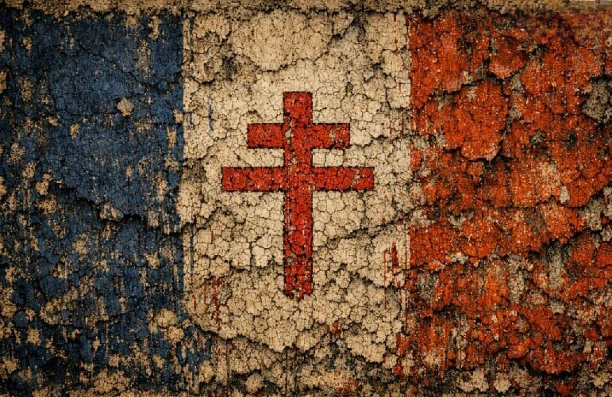
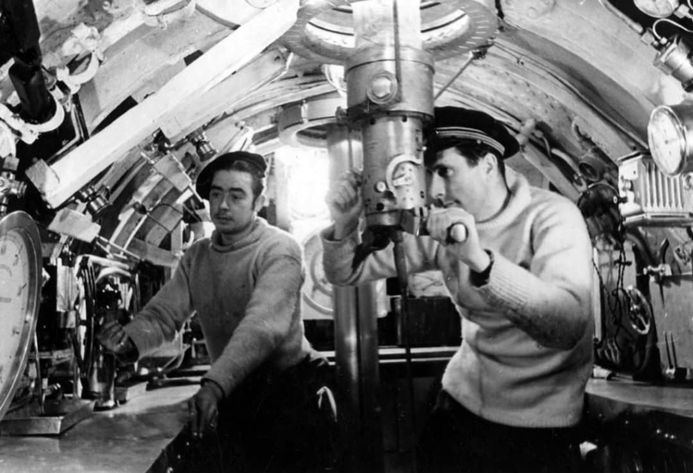

Introduction
La France Libre naît en juin 1940, au moment où la France s’effondre sous l’offensive allemande et où le gouvernement du maréchal Pétain choisit l’armistice. Une minorité refuse la défaite : militaires, marins, aviateurs, ingénieurs, volontaires de l’Empire et civils qui rejoignent Londres ou les territoires encore libres. Sous l’impulsion de Charles de Gaulle, la France Libre devient une force militaire, politique et morale, qui incarne la continuité de la République et prépare la libération du territoire. Elle représente une autre France : celle qui refuse la capitulation, qui maintient l’honneur et qui prépare le retour à la République.
Symboles de la France Libre

Croix de Lorraine
Emblème officiel de la France Libre, proposé par le vice-amiral Émile Muselier en juillet 1940. Héritière de la croix d’Anjou et associée à Jeanne d’Arc, elle symbolise la résistance, la foi et l’identité française. Face à la croix gammée, la croix de Lorraine devient une réponse visuelle forte : une croix française contre le symbole du totalitarisme nazi. Elle est peinte sur les navires, les avions et portée sur les uniformes des Forces françaises libres.
▶ Vidéo – Croix de Lorraine & France LibreCroix de Lorraine – Fiche complète
V de la Victoire

Initialement utilisé par la propagande allemande, le V est retourné par la Résistance : V = Victoire, Vaincre, Vive la France Libre. Associé à la croix de Lorraine, il devient un symbole clandestin tracé sur les murs des villes occupées, sur les affiches, les tracts et parfois même sur les véhicules. Ce détournement du symbole montre que la guerre se joue aussi sur le terrain des images et des signes.
Les figures majeures de la France Libre

Charles de Gaulle
Chef de la France Libre, auteur de l’Appel du 18 juin, organisateur des Forces françaises libres et de la Résistance extérieure. Il incarne la continuité de la République et la volonté de poursuivre la guerre, malgré la défaite militaire de 1940. De Londres à Alger, puis jusqu’à Paris libéré, De Gaulle construit une légitimité politique face au régime de Vichy et aux Alliés.
▶ Vidéo – Appel du 18 juin 1940 ▶ Vidéo – De Gaulle libère Paris (25 août 1944)
Émile Muselier
Vice-amiral, créateur des Forces Navales Françaises Libres (FNFL) et auteur du choix de la croix de Lorraine comme emblème. Il organise les premières unités navales de la France Libre et donne une identité visuelle forte au mouvement. Son rôle est central dans la présence française sur mer aux côtés des Alliés.

Winston Churchill
Premier ministre britannique, soutien essentiel de la France Libre. Il offre à De Gaulle un espace politique, un accès à la BBC et une reconnaissance internationale, malgré les tensions diplomatiques. Sans Churchill, la voix de la France Libre aurait eu beaucoup plus de mal à se faire entendre.

Georges Mandel
Opposant farouche à l’armistice, il encourage De Gaulle à quitter la France avant la capitulation : « La France aura besoin de vous ». Figure politique majeure de l’avant-guerre, il incarne la résistance morale au renoncement et à la collaboration.
Les Forces Françaises Libres (FFL)

Les Forces Françaises Libres (FFL) regroupent les unités terrestres, navales et aériennes qui refusent l’armistice et choisissent de continuer le combat aux côtés des Alliés. Elles se battent en Afrique, au Moyen-Orient, en Europe et dans l’Atlantique, souvent avec des moyens limités mais une détermination exceptionnelle. Ces forces montrent que la France n’est pas seulement vaincue : elle continue la guerre, même depuis l’exil.
FNFL – Forces Navales Françaises Libres
Créées par Muselier, les FNFL rassemblent contre-torpilleurs, sous-marins, corvettes et navires marchands ralliés à Londres. Elles participent à l’escorte des convois, aux opérations en Méditerranée, aux missions de surveillance et à la libération des ports français. Leur action contribue à maintenir une présence française sur les mers, malgré la mainmise de l’Allemagne et de l’Italie.
FNFL – Fiche complète
Chronologie de la France Libre
18 juin 1940 : Appel du général de Gaulle à Londres, refus de la défaite et appel à la résistance.
Juillet 1940 : Création des FNFL, adoption de la croix de Lorraine comme emblème officiel.
1941 : Ralliements de l’Afrique équatoriale française et consolidation de la France Libre dans l’Empire.
1942 : Bataille de Bir Hakeim, victoire symbolique des FFL face aux forces de l’Axe en Afrique du Nord.
1943 : Fusion de la France Libre et de la France Combattante, unification des forces françaises engagées aux côtés des Alliés.
1944 : Débarquement en Normandie, libération de Paris, restauration de la République et retour de De Gaulle à la tête de l’État.